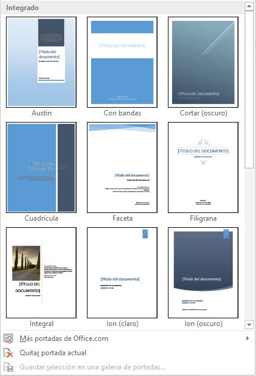
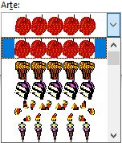
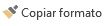

Titulo de la seccion
Nota
A veces Word realiza acciones sin previo aviso ni autorización. Por ejemplo:
Observación:
Es imporartante aclara que Word no sirve únicamente para introducir texto. Se puede insertar imagenes, tablas,
gráficos y muchos otros objetos que enriquecerán el documento.
Vistas
Con la barra inferior puedes cambiar la forma en que visualizas el documento, o lo que es lo mismo,
la vista  Vistas Desde esta barra tenemos acceso a las vistas Modo lectura, Diseño de impresión
y Diseño web.
Vistas Desde esta barra tenemos acceso a las vistas Modo lectura, Diseño de impresión
y Diseño web.
Para acceder a todas las vistas: pestaña Vista > grupo Vistas de documento.
Diseño de impresión
En esta vista se pueden aplicar formatos y realizar la mayoría de las tareas habituales.
Es la vista predeterminada. Se ve tal y como se imprimirá, con gráficos, imágenes, encabezados
y pies de página, etc.
Modo lectura
Esta vista permite visualizar la página de una forma muy limpia, con pocos elementos para
facilitar la lectura. Si el espacio de la pantalla lo permite, muestra dos páginas por pantalla.
En esta vista no se ven los encabezados y pies de página.
Esta pantalla de lectura tiene las siguientes tres características:
- Cuando tenemos la pantalla maximizada, ocupando todo el espacio, se mantiene una pantalla
con los mínimos elementos para que la lectura sea más cómoda.
- En la parte izquierda y derecha tiene unas flechas para retroceder y avanzar página.

- En la parte inferior la barra de estado cambia el diseño como muestra la siguiente imagen:
Tiene un botón blanco que permite desplazarse rápidamente por todo el documento y en la barra
de estado desaparecen las indicaciones del idioma y del número de palabras.
Observación:
Cuando cerramos un documento en modo lectura y lo volvemos a abrir más
tarde, Word nos muestra un aviso por si queremos volver al punto exacto donde dejamos el documento.
Basta con hacer clic en
para ir al punto donde habíamos dejado la lectura la última vez. Pasados unos segundos, el aviso se hace
más pequeño .
Si no haces clic en el aviso, este desaparece al poco tiempo.
Diseño Web
Se utiliza para ver el aspecto de un documento Web tal y como se vería desde un navegador como Internet
Explorer o Firefox si lo publicáramos.
Esquema
En esta vista se puede observar y editar la jerarquía de los apartados que conforman el
documento. Profundizaremos en esta vista a lo largo del curso.
Borrador
En esta vista se optimiza el tamaño de la hoja y de las fuentes, para facilitar la lectura en pantalla.
Se muestra con la misma longitud de línea que en la versión impresa, pero elimina elementos como los encabezados o pies
de página, que suelen ser más retoques para la publicación que contenido útil en un borrador.
Pestaña Vista
Ver varios documentos a la vez
-
En la pestaña Vista encontramos el grupo Ventanas, que nos ayudará a decidir cómo organizar las
ventanas de Word en caso de que estemos trabajando con más de un documento a la vez.
-
El botón Cambiar ventanas despliega un menú con el nombre de cada uno de los documentos abiertos, permitiéndonos
elegir cuál queremos ver en primer plano.
-
Al pulsar el botón Organizar todo se situará un documento sobre el otro, permitiéndote ver los dos de forma simultánea.
Solo una de las ventanas es la ventana activa: la que tiene la barra de título más coloreada. En el ejemplo de la imagen,
la inferior.
Para hacer que una ventana se convierta en la ventana activa basta con hacer clic dentro del área de la ventana.
- Podemos variar el tamaño y la posición de cada ventana a nuestro gusto:
- Para modificar el tamaño hay que situar el cursor en el borde de la ventana y arrastrarlo cuando tome forma de
flecha bidireccional. Los bordes superior e inferior alterarán la altura, los bordes laterales la anchura y las esquinas ambas.
- Para cambiar la posición, arrastra la ventana desde su barra de título.
Dividir pantalla
Podemos crear una línea de separación dentro de un mismo documento, pudiendo utilizar la zona superior y la inferior de
forma independiente y trabajar con ellas como si de un duplicado se tratase. Esta opción es especialmente útil en documentos
extensos en que necesitamos ver dos partes del mismo a la vez constantemente, pero que distan mucho entre sí. Así nos
evitamos tener que ir cambiando de página una y otra vez.
Encontraremos esta herramienta en pestaña Vista > grupo Ventanas > Dividir
Cuando hayamos incluido una división, el botón se convertirá en Quitar división y al pulsarlo de nuevo
la podremos eliminar.
Ortografía y gramática
La revisión ortográfica y gramatical es otra de las grandes aportaciones de los procesadores de texto.
Particularmente, Word dispone de potentes herramientas en este campo que han sido mejoradas notablemente desde
las primeras versiones.
Evitar que haya errores en nuestros textos es ahora mucho más fácil. No obstante conviene saber que revisar
un documento y que Word no encuentre ningún error no quiere decir que, necesariamente, sea así. Ya que hay
errores que Word no puede detectar puesto que dependen del contexto. La forma que tiene Word para detectar
las palabras erróneas es comprobar si las palabras de nuestro documento existen en el diccionario que lleva
incorporado, junto con algunas reglas gramaticales. Lo que no es capaz de hacer Word, por el momento, es
discernir el significado de las palabras en cada contexto.
Ejemplo:
La revisión ortográfica consiste en comprobar que las palabras de nuestro texto no son erróneas y
la revisión gramatical trata de que las frases no contengan errores gramaticales como por ejemplo
"Los libros son buenas"; donde no concuerdan el género del sujeto y del adjetivo. Obviamente Word realiza
mejor la revisión ortográfica, porque únicamente debe contrastar con los diccionarios. Por eso es importante
que prestemos especial atención a los posibles fallos gramaticales, que al depender del contexto, son más
difíciles de identificar para el programa.
Podemos realizar una revisión ortográfica, una gramatical o ambas a la vez
Revisar mientras se escribe
De forma predeterminada, Word irá subrayando con una línea ondulada las palabras que considere que contienen
errores ortográficos en rojo y las que considere que contienen errores gramaticales en azul. Lo hará a medida
que vayamos escribiendo, sin necesidad de solicitar la revisión de forma expresa. Word no podrá detectar
errores gramaticales hasta que la frase esté acabada, por ejemplo, con un punto.
Ejemplo:
Ortografía
Para corregir el error debemos colocar el cursor sobre palabra subrayada y pulsar el botón derecho del ratón.
Entonces aparecerá el menú contextual que nos permitirá elegir una de las palabras sugeridas.
Además de las palabras sugeridas, en el menú contextual encontramos otras opciones interesantes:
- Omitir todo: En ocasiones el corrector se equivoca, o simplemente estamos utilizando nombres
propios o marcas que no están incluidos en el diccionario. En tal caso, deberemos omitir el error. Si queremos
que no vuelva a identificar esta palabra como un error a lo largo del documento, deberemos seleccionar Omitir
todas. Los fallos gramaticales se basan en que la palabra en sí no tiene ningún error, el error es producido
por su dependencia con el contexto, por ese motivo, no podremos omitir todas, sino que deberemos Omitir una vez.
Sin embargo esta opción no aparece en el menú contextual, para poder usarla deberemos abrir el panel Ortografía
pulsando F7, que explicaremos un poco más adelante.
- Agregar al diccionario: Añade la palabra subrayada al diccionario personalizado y no la volverá a mostrar subrayada.
Podemos agregar palabras al diccionario si estamos seguros de su existencia. Por ejemplo, términos científicos que no suelen estar contemplados.
O bien, por motivos prácticos. Si utilizamos constantemente el nombre de nuestra empresa y siempre presenta problemas,
lo más práctico es incluirlo en el diccionario, para no tener que omitirlo en cada uno de los documentos.
Gramática
En nuestro ejemplo la palabra sugerida frente al error gramatical es Este, con lo que la frase quedaría "Este autobús ... "
Omitir una vez:
Gramática
Abre el panel de gramática que veremos a continuación.
Observación:
Tener activada la opción de revisar mientras se escribe puede causar que, en documentos extensos,
la carga del documento resulte lenta. Ésto se debe a que, al abrir el archivo, se revisará automáticamente todo su contenido
Panel ortografía/gramática.
Si no queremos ir cambiando cada una de las palabras manualmente, podemos recurrir a forzar la revisión una vez
hayamos terminado de escribir.
Lo podemos realizar desde la pestaña Revisar > grupo Revisión > opción Ortografía y gramática, o bien pulsando la tecla F7.
Word comenzará a efectuar la revisión ortográfica y cuando encuentre un posible error se detendrá y lo mostrará en el panel
Ortografía o en el panel Gramática para que escojamos la opción más correcta, de forma similar a como acabamos de ver con el
menú contextual, la diferencia es que en el panel hay más opciones disponibles.
Autocorreción
Mediante la autocorrección Word puede corregir algunos errores obvios sin previo aviso y nos ofrece
la posibilidad de realizar nuestras propias correcciones.
Ejemplo:
Por ejemplo, si detecta que escribes o once, lo cambiará automáticamente por u once. O bien, si detecta que empiezas una
frase con minúscula, la cambiará por mayúscula.
Esta herramienta es un arma de doble filo y como todo, presenta ventajas y desventajas:
- Es una forma cómoda de automatizar la corrección en errores que solemos cometer frecuentemente.
- Hay que ir con cuidado porque en ocasiones Word cambiará automáticamente una palabra sin que nos
demos cuenta y es posible que no nos interese en algún caso en concreto. Por eso no recomendamos
automatizar demasiado los errores, porque puede ocurrir que al final no tengamos apenas control
de lo que estemos escribiendo.
Observación:
Para tener un mayor control de las correcciones que Word hace de forma automatizada,
lo ideal es mirar la pantalla a la vez que escribimos para detectarlas a tiempo y no fijar la vista en el teclado.
Si te falta práctica para ello, es posible que te interese desactivar esta opción de corrección. Para hacerlo:
- Elegir la pestaña Archivo > Opciones.
- En el cuadro de diálogo que aparecerá. Seleccionar en el menú de la izquierda, Revisión.
- Hacer clic en el botón Opciones de Autocorrección....
Aparecerá un cuadro de diálogo como este, vamos a ver las posibilidades más interesantes.
-
Corregir DOs Mayúsculas Seguidas. Si activamos esta casilla cuando aparezcan dos mayúsculas seguidas
al principio de una palabra Word sustituirá la segunda mayúscula por una minúscula.
-
Poner en mayúscula la primera letra de una oración Pone en mayúscula la primera letra después de un
signo de puntuación que indique el final de una oración, como por ejemplo un punto, un final de interrogación, etc.
-
Poner en mayúscula la primera letra de celdas de tablas Cuando hay texto en una celda hace que empiece por mayúscula.
-
Poner en mayúscula los nombres de días. Pone en mayúscula los nombres de los días de la semana.
-
Corregir el uso accidental de bLOQ mAYÚS Cuando encuentra una palabra con la primera letra en minúscula y
las siguientes en mayúsculas la cambia por la primera en mayúscula y las siguientes en minúsculas y desactiva el
bloqueo de mayúsculas.
-
Reemplazar texto mientras escribe: Al activar esta casilla sustituye las palabras de la columna Reemplazar
por las palabras de la columna Con. De esta forma se pueden corregir errores como los que vemos en la imagen.
Por ejemplo, si la palabra cuanto va detrás de una exclamación va siempre con tilde.
- También tenemos disponible el botón Excepciones... que nos permite especificar unas excepciones a algunas
opciones de Autocorrección.
Sinónimos y traducción
Además de la corrección de textos, Word consigue facilitar nuestro trabajo a la hora de la redacción y ayudarnos
a crear documentos de valor. Para ello, nos ofrece los sinónimos, la traducción y una serie de fuentes de información
y consulta. Pueden resultar muy útiles, especialmente si disponemos de conexión a internet, ya que en tal caso también
podremos consultar contenidos de la red directamente en Word.
Formato del documento
Cuando hablamos del formato de un documento nos estamos refiriendo a las cuestiones que tienen que ver con su aspecto,
con la forma de presentarlo. El contenido en sí seguirá siendo el mismo.
La presentación del documento es importante. No sólo por elegancia, sino también para facilitar y motivar su lectura.
Afortunadamente, Word facilita mucho esta tarea y con poco trabajo se consiguen resultados espectaculares.
- Temas
- incluir una portada y cambiar el color de página.
- modificar el formato del texto.
- Modificar el formato de parrafos
Temas
Un tema es la aplicación de distintos formatos sobre cada uno de los estilos y elementos que componen el documento.
En un tema, por ejemplo, se define que todos los títulos serán de un determinado color, con un determinado tamaño y
una determinada tipografía. Y así con todos los estilos. De este modo que no importa lo extenso que sea el documento,
porque si hemos aplicado correctamente los estilos se cambiará su formato por completo con un único clic.
Existen varios temas predeterminados, puedes encontrarlos en pestaña Diseño > grupo Formato del documento >
opción Temas.
Por defecto se utiliza el tema Office, sin embargo si no hay ninguno que sea de tu agrado, puedes crear temas personalizados.
Para esto, debemos elegir el tema que más se aproxime a lo que buscamos, y utilizar los botones Colores, Fuentes
y Efectos que hay a la derecha del botón Temas.
Portada
En ocasiones el tipo de documentos que realizamos necesitan de una portada: proyectos, memorándums, informes...
Word facilita mucho esta tarea, ya que pone a nuestra disposición una serie de portadas predefinidas.
Para incluir una portada debemos ir a la pestaña Insertar > grupo Páginas > Portada
Se desplegará un menú con varios diseños. Haciendo clic en uno de ellos se insertará una nueva página
al principio del documento con el aspecto elegido.

La portada suele incluir cuadros que deben rellenarse con los datos adecuados, como el título, el subtítulo,
la fecha o el nombre del autor. De entrada, estos campos se muestran con texto entre corchetes:
[Escribir el título ...]. Al hacer clic sobre él se muestra un cuadro de edición, donde hay que indicar el nuevo texto.
Las portadas, al igual que el resto del documento, se ven influenciadas por el tema aplicado
al documento. Es decir, que el aspecto variará ligeramente para adaptarse a los colores y fuentes del tema en
cuestión y así dar un aspecto al conjunto más homogéneo.
Fondo de página
Otro detalle que nos ayudará con los últimos retoques del documento es cambiar el fondo de las páginas. Por defecto
las páginas se muestran blancas, porque es el color más normal del papel de impresión y por tanto dejarlo así
supone un menor gasto de tinta en la impresión.
En pestaña Diseño > grupo Fondo de página.
Marca de agua
Normalmente es un texto que se ve al fondo de la página, por ejemplo Confidencial, No copiar, Borrador, Ejemplo y Urgente.
Al hacer clic se desplegará el menú siguiente que te permitirá elegir el que quieras del listado:
Para quitar la marca de agua de un documento deberás pulsar la opción Quitar marca de agua. Si ningún texto se adapta a
tus necesidades o quieres que la marca de agua sea una imagen (por ejemplo el logo de tu empresa), puedes personalizarla.
Color de página
Al hacer clic, un menú te permite elegir el color en una paleta de colores.
Para recuperar el color blanco, elige la opción Sin color. Y si no encuentras el que quieres en la paleta,
pulsa Más colores.... También puedes crear fondos más complejos, que no sean simplemente de un color sino
que utilicen degradados, texturas y tramas.
Bordes y sombreado
Al pulsar esta opción se abre un cuadro de diálogo como el siguiente:
La forma de aplicar el borde es ir escogiendo las opciones de izquierda a derecha.
-
Primero selecciona el valor para el borde: Ninguno, Cuadro, Sombra, 3D o Personalizado.
-
Luego, selecciona el estilo de línea que quieres aplicar:
-
Si eliges un Estilo de línea, podrás especificar su color y ancho.
-
En cambio, si escoges un Arte, el borde será un motivo realizado por una consecuencia de dibujos.
Por lo tanto sólo podrás establecer un ancho, y en algunos casos el color (cuando el programa lo permita)
porque el color y forma son características propias del dibujo:

-
Por último, elige en la vista previa qué bordes quieres aplicar. De forma predeterminada se muestran bordes
en los cuatro lados, pero activando y desactivando los botones que hay a su lado podrás decidir cuáles mostrar.
También podrás decidir qué ámbito de aplicación tendrán: todo el documento, sólo la primera página, todas excepto la primera...
Observación:
Estas tres opciones: marga de agua, color de fondo y bordes, son compatibles. Podrás utilizar
las tres a la vez en un mismo documento, pero ten en cuenta que la marca de agua suele tener un color muy claro y
es posible que no se aprecie con según qué colores de fondo.
Fuente
Cuando hablamos de fuente nos referimos a la forma en que se representan cada una de las letras, números y signos de
puntuación que se escriben como texto.
Como hemos visto se puede dar un estilo diferente a las fuentes del documento a través de los temas y estilos.
Pero en este apartado aprenderemos a realizar estos cambios de forma manual y precisa, para poder, por ejemplo,
aplicar un formato distinto a un texto en concreto.
Podemos modificar la fuente desde la pestaña Inicio > grupo Fuente.
También aparecen las herramientas de formato automáticamente al seleccionar una palabra o frase:
Fuente/Tipos de letra
Tamaño de la fuente
Efectos básicos
Mayúsculas/minúsculas
Color y efectos de texto
Formato párrafo
Puede controlar el espacio vertical entre las líneas de texto en el documento mediante
la configuración del interlineado. O bien, puede cambiar el espacio vertical entre los
párrafos del documento estableciendo el espaciado antes o después de los párrafos.
También puede elegir conservar líneas de texto o párrafos juntos en una página.
El cuadro de diálogo Párrafo contiene opciones generales de sangría y espaciado. En la parte inferior
del cuadro de diálogo hay una vista previa del aspecto que tendrán las opciones antes de aplicarlas.
General
|
General
|
|
|
Alineación
|
Elija Izquierda para alinear el texto a la izquierda con un borde derecho irregular (o use el método abreviado de teclado CTRL+L).
|
|
Elija Centrar para centrar el texto con bordes irregulares a la izquierda y la derecha (CTRL+E).
|
|
Elija Derecha para alinear el texto a la derecha con un borde izquierdo irregular (CTRL+R).
|
|
Elija Justificar para alinear el texto a la derecha y la izquierda, y para agregar un espacio entre palabras (CTRL+J).
|
|
Nivel de esquema
|
Es el nivel donde se muestra el párrafo en la vista Esquema.
|
|
Elija Contraído de forma predeterminada si quiere que el documento se abra con los encabezados contraídos de forma predeterminada. Consulte Contraer o expandir partes de un documento para obtener más información.
|
Sangría
|
Sangría
|
|
|
Izquierda
|
Aplica sangría al párrafo a la izquierda la cantidad que indique.
|
|
Derecha
|
Aplica sangría al párrafo a la derecha la cantidad que indique.
|
|
Especial
|
Elija Primera línea > Por para aplicar sangría a la primera línea de un párrafo. Para crear rápidamente una sangría de primera línea con la regla, consulte Crear una sangría de primera línea.
|
|
Elija Sangría francesa > Por para crear una sangría francesa. Para crear rápidamente una sangría francesa con la regla, consulte Crear una sangría francesa.
|
|
Sangrías reflejadas
|
Al seleccionar esta opción, Izquierda y Derecha se convierten en Dentro y Fuera. Se utiliza para la impresión estilo libro.
|
Espaciado
|
Espaciado
|
|
|
Antes
|
Ajusta la cantidad de espacio antes de un párrafo.
|
|
Después
|
Ajusta la cantidad de espacio después de un párrafo.
|
|
Interlineado
|
Elija Texto de un solo espacio para un solo espacio. Para cambiar rápidamente a espaciado simple todo el documento, vea Aplicar espacio simple a las líneas de un documento.
|
|
Elija 1,5 líneas para cambiar el interlineado del texto a 1,5 líneas.
|
|
Elija Doble para texto de espaciado doble. Para cambiar rápidamente a espaciado doble todo el documento, vea Aplicar espacio doble a un documento.
|
|
Elija Mínimo > En para establecer la cantidad mínima de espaciado necesaria para albergar la fuente o gráfico de mayor tamaño en la línea.
|
|
Elija Exactamente > En para establecer el interlineado fijo, expresado en puntos. Por ejemplo, si el texto está en una fuente de 10 puntos, puede especificar 12 puntos como interlineado.
|
|
Elija Múltiple > En para establecer el interlineado como un múltiplo expresado en números mayores que 1. Si establece el interlineado como 1,15 se aumentará el espacio en un 15 %; si establece el interlineado en 3, se aumentará el espaciado en un 300 % (espaciado triple).
|
|
No agregar
|
Elija No agregar espacio entre párrafos si no quiere agregar espacio adicional entre párrafos.
|
Interlineado
Cambiar el interlineado en todo un documento
- Vaya a Diseño > espaciado entre párrafos.
- Elija una opción. Para agregar un espacio único al documento, seleccione Sin espacio de párrafo.
Para volver a la configuración original más adelante, vaya a Diseño > espaciado entre párrafos y elija la
opción en Conjunto de estilos. Puede ser Predeterminado o el nombre del estilo que está usando actualmente.
Cambiar el interlineado en una parte del documento
- Seleccione uno o varios párrafos para actualizar. Presione Ctrl + A para seleccionar todo.
- Vaya a Inicio > espacio entre líneas y párrafos Botón Espaciado entre líneas y párrafos
- Seleccione Opciones de interlineado y elija una opción en el cuadro Interlineado.
- Ajuste la configuración antes y después para cambiar el espaciado entre párrafos.
- Seleccione Aceptar.
Tabulaciones
Las tabulaciones son posiciones fijas a las cuales se desplaza el cursor cuando pulsamos la tecla de tabulación TAB
Cuando necesitamos insertar texto en columnas o tablas pueden ser muy utiles las tabulaciones.
Word tiene por defecto definidas tabulaciones cada 1,25 cm. Pero se pueden establecer tabulaciones en las
posiciones que deseemos. Además podemos definir la alineación para cada tabulación.
Vamos a ver como establecer tabulaciones utilizando la regla horizontal. Debemos tener en cuenta que las tabulaciones
afectan solo al párrafo en el que se definen. Para establecer cada tabulación tenemos que repetir cada uno de estos
dos pasos:
-
Hacer clic en el extremo izquierdo de la regla horizontal para seleccionar la alineación de la tabulación
que vamos a insertar. Por cada clic que hagamos irán apareciendo rotativamente diferentes iconos que corresponden
a las siguientes alineaciones: izquierda, centrada, derecha, decimal, barra de tabulaciones, sangría
de primera línea y sangría francesa
-
Colocar el cursor en la regla horizontal en la posición en la que deseemos establecer la tabulación
y hacer clic, veremos cómo se inserta el icono con la tabulación seleccionada.
Observación: Si queremos modificar la posición de una tabulación basta colocar el cursor en el icono de
esa tabulación y hacer clic y arrastrarlo a la nueva posición.
También podemos hacer doble clic sobre una de las marcas de tabulación de la regla horizontal para que aparezca
el cuadro de diálogo de tabulaciones que vemos en la imagen de la derecha donde podemos fijar todas las
tabulaciones de una vez o eliminarlas.
Numeracion y viñetas
En el grupo Párrafo de la pestaña Inicio también encontramos herramientas para crear listas. 
Manualmente
Una lista no es más que un conjunto de elementos ligeramente tabulados y precedidos por un símbolo, dibujo o número.
Utilizaremos una lista numerada o por viñetas dependiendo de si los elementos guardan o no un orden secuencial.
Para aplicarlas, podemos:
-
Pulsar el correspondiente botón y empezar a escribir cada uno de los elementos de la lista.
-
O bien seleccionar un texto ya existente y aplicar el estilo de lista.
Automaticamente
Esta es la forma manual de crear listas, pero existe otra forma: dejar que Word la cree de forma automática.
-
Si empiezas a introducir elementos precedidos por un signo (como - o * ) Word entenderá que quieres
introducir una lista de viñetas.
-
Si lo que haces es introducir elementos precedidos por letras o números también creará una lista, en este caso numérica.
Observaciones:
-
Ten presente que se inserta un número o viñeta por cada párrafo, es decir, a continuación de la tecla INTRO.
Si quieres que dos elementos estén en la misma viñeta, deberás separarlos por un salto de línea, pulsando MAYÚS+INTRO
en vez de INTRO.
-
Si quieres que un elemento de la lista numérica no empiece por 1 o no siga la secuencia, utiliza la opción
Establecer valor de numeración del submenú que despliega su correspondiente flecha.
-
Una vez hemos completado la lista y queremos continuar con un párrafo normal, hay que pulsar de nuevo la tecla INTRO
después del último elemento, es decir, hay que pulsar dos veces la tecla INTRO.
-
Una característica de los elementos de una lista es que se pueden ordenar alfabéticamente. Lo haremos seleccionándolos
y pulsando el botón Ordenar
 que se
encuentra también en la pestaña Inicio, junto a los botones de lista. En el cuadro de diálogo lo único que debemos
hacer es escoger si queremos una ordenación ascendente o descendente y aceptar.
que se
encuentra también en la pestaña Inicio, junto a los botones de lista. En el cuadro de diálogo lo único que debemos
hacer es escoger si queremos una ordenación ascendente o descendente y aceptar.
-
Al pulsar el botón Aumentar sangría antes de introducir un nuevo elemento indicamos que este está un nivel inferior
que el anterior, es decir, indicamos una dependencia. Esto da lugar a las listas multinivel. Las listas multinivel
pueden ser tanto de viñetas como numéricas.
También encontrarás la opción Cambiar nivel de lista en cada uno de los botones de lista

Para elegir el estilo de lista, lo único que hay que hacer es desplegar la flecha triangular
situada a la derecha de cada uno de los botones.
Podrás escoger entre varios modelos, pulsando directamente sobre la pequeña muestra del menú que se despliega.
También puedes crear un estilo de lista personalizado pulsando Definir nueva viñeta, Definir nuevo formato de
número o Definir nueva lista multinivel.
El portapapeles
El Office portapapeles almacena texto y gráficos que copia o corta desde cualquier lugar y le permite pegar
los elementos almacenados en cualquier otro archivo Office archivo. Esta es la manera en que funciona en Word
2013 o 2016.
El Portapapeles de Office le permite copiar hasta 24 elementos de documentos de Office u otros programas y
pegarlos en otro documento de Office. Por ejemplo, puede copiar texto de un mensaje de correo electrónico,
datos de un libro u hoja de datos y un gráfico de una presentación y luego pegarlos todos en un documento.
Al usar el Portapapeles de Office, puede organizar los elementos copiados de la forma que desee en el documento.
Con el panel de tareas Portapapeles no solo puede pegar el último elemento copiado o cortado.
El panel de tareas Portapapeles guarda muchas de las últimas imágenes y texto que copió o pegó.
Copiar formato
En la pestaña Inicio > grupo Portapapeles, tenemos disponible el icono para Copiar formato
. Este icono permite
copiar las características de formato de un texto para aplicarlas a otros textos. Podemos copiarlo una o varias veces:
-
Una vez:
Hacer clic sobre la palabra de la cual queremos copiar el formato, ir a la barra de herramientas
y hacer clic en Copiar formato Copiar formato, el cursor tomará la forma de brocha, colocarlo sobre la
palabra en la que queremos copiar el formato, y hacer clic sobre ella.
-
Varias:
Hacer clic sobre la palabra de la cual queremos copiar el formato, hacer doble clic en Copiar formato Copiar formato,
el cursor tomará la forma de brocha, a continuación hacer clic sobre tantas palabras como se desee, y para acabar volver
a hacer clic en el icono de copiar formato.
En ambos casos, si queremos copiar el formato sobre un conjunto de palabras o líneas, una vez el cursor tome la forma
de brocha, seleccionar las palabras o líneas y el nuevo formato se copiará sobre ellas. Copiar formato,
copia tanto el formato caracter como el formato párrafo.
Configuraciones de página
Saltos de linea
-
En Word al escribir un texto hay que teclearlo sin más. Los saltos de línea se realizan automáticamente
al llegar al margen derecho. Si quieres realizar un cambio de línea, se utiliza la tecla INTRO
(también llamada ENTER o retorno de carro).
-
Word se encarga de que el texto que vas introduciendo se contenga dentro de unos márgenes y pasa a la línea inferior
cuando alcanza el margen derecho. Pero conviene saber que, si algún momento quieres realizar un salto de línea de
forma voluntaria, lo puedes hacer con la combinación de teclas MAYÚS+INTRO.
Saltos de página
Los saltos de página se insertan automáticamente cuando llegamos al margen inferior de una página y seguimos escribiendo.
También se pueden insertar de forma manual si queremos pasar a la página siguiente aunque no hayamos llegado al final,
desde la pestaña Insertar > grupo Páginas > opción Salto de página. 
Observación:
La herramienta
Mostrar todo te permite saber si un texto ha sido dividido en bloques mediante
saltos de línea o mediante
párrafos.
- Pestaña Inicio > grupo Párrafo.
Si la utilizas, el documento se llenará de marcas como las que ves en la imagen:
Además de los saltos de línea y los cambios de párrafos también se muestran otros símbolos como un punto medio que señala
que hay un espacio separando las palabras, o una marca de salto de página.
Para ocultar de nuevo estas marcas debemos pulsar de nuevo el botón  .
.
Margenes
En Word, todas las páginas tienen automáticamente un margen de una pulgada. Se puede personalizar la configuración
de márgenes o elegir una predefinida. También se pueden establecer márgenes de páginas opuestas, dejar espacio de
márgenes adicional para la encuadernación de documentos y cambiar el modo en que se miden los márgenes.
Elegir margenes de página con una configuración predefinida
- En el grupo Configurar página de la pestaña Diseño de página, elija Márgenes
y aparecerá la galería Márgenes.
- Elija el tipo de margen que quiera aplicar.
- Establezca la nueva configuración de márgenes como predeterminada para la plantilla. Cada nuevo
documento que se base en esa plantilla usará automáticamente la nueva configuración de márgenes.
- Después de seleccionar un nuevo margen, elija Márgenes y luego Márgenes personalizados.
- En el cuadro de diálogo Configurar página, elija Establecer como predeterminado.
Observación:
Si el documento contiene varias secciones, el nuevo tipo de margen solo se aplicará a la sección
actual. Para aplicar el nuevo tipo de margen a varias secciones, asegúrese de seleccionarlas todas.
Crear una configuración de margenes de paginas personalizadas
- En el grupo Configurar página de la pestaña Diseño de página, elija Márgenes y aparecerá la galería Márgenes.
- En la parte inferior de la galería Márgenes, elija Márgenes personalizados.
- En el cuadro de diálogo Configurar página, especifique nuevos valores para los márgenes.
Otras sugerencias sobre márgenes
- Para cambiar los márgenes de una sección de un documento, seleccione el texto y establezca los nuevos
márgenes en el cuadro de diálogo Configurar página. En el cuadro Aplicar a, haga clic en Texto seleccionado.
Microsoft Word inserta automáticamente saltos de sección antes y después del texto con la nueva configuración
de márgenes.
- La mayoría de las impresoras requieren un ancho mínimo para la configuración de márgenes. Si los márgenes son
demasiado estrechos, Microsoft Word muestra el mensaje Uno o más márgenes están establecidos fuera del área
imprimible de la página. Haga clic en Arreglar para aumentar el ancho de los márgenes automáticamente.
Si omite el mensaje, Word muestra otro mensaje que le pregunta si quiere continuar.
- La configuración del margen mínimo de impresión depende de la impresora, el controlador de la impresora y
el tamaño del papel. Para obtener información sobre la configuración de márgenes mínimos, consulte el manual
de la impresora.
Establecer margenes de páginas opuestas
Utilice márgenes simétricos para configurar páginas opuestas en documentos de doble cara, como libros o revistas.
Cuando se eligen márgenes simétricos, los márgenes de la página izquierda son una imagen reflejada de los de la
página derecha. Los márgenes interiores tienen el mismo ancho y los márgenes exteriores tienen el mismo ancho.
- En el grupo Configurar página de la pestaña Diseño de página, haga clic en Márgenes > Reflejado.
Observación:
Nota: Para cambiar el ancho de márgenes, haga clic en Márgenes personalizados en la parte
inferior de la galería Márgenes. Escriba nuevos valores en los cuadros Interior y Exterior.
Agregar un margen de encuadenación para documentos enlazados
Un margen de encuadernación agrega espacio adicional al margen lateral, al margen superior o a los márgenes
internos del documento que tiene pensado encuadernar. De esa manera, el texto no quedará oculto con la
encuadernación.
- Márgenes de medianil para encuadernación
- Márgenes simétricos en páginas opuestas
Para establecer el margen de medianil
- En la pestaña Diseño de página, en el grupo Configurar página, haga clic en Márgenes.
- Haga clic en Márgenes personalizados.
- En el cuadro Medianil, escriba un valor para el ancho del margen de medianil.
- En el cuadro Posición de medianil, haga clic en Izquierda o en Superior.
Nota:
El cuadro Posición de medianil no está disponible cuando se utiliza la opción Márgenes simétricos,
Dos páginas por hoja o Formato libro. Para esas opciones, la posición del margen interno se determina automáticamente
Agregar un margen de encuadenación para documentos enlazados
Word puede mostrar líneas en el documento que representen los límites del texto.
- En la pestaña Archivo, haga clic en Opciones.
- Haga clic en Avanzadas y, en Mostrar contenido de documento, active la casilla Mostrar límites de texto.
Los márgenes de página aparecen en el documento como líneas de puntos.
Nota:
Puede ver los márgenes de página en la vista de diseño
de impresión o la vista de diseño web. Los límites de texto no aparecen en la página impresa.
Número de página
Secciones
Tablas
Encabezado y pie de pagina
Ilustraciones, objetos, etc
Impresión
Antes de imprimir es interesante echar un vistazo al aspecto general del documento para ver si está todo correcto.
Para ello nos aseguraremos de que estamos viendo el documento en vista de impresión. En la pestaña Vista deberá
estar seleccionado Diseño de impresión, o bien deberemos comprobar que en la barra de estado esté marcada esta
opción Barra de estado .
Esta vista presenta la página tal y como se imprimirá, con gráficos, imágenes,
encabezados y pies de página, etc.
En la pestaña Vista > grupo Zoom. Se tienen opciones muy interesantes:
 .
.
-
El botón Una página ajustará la página al espacio que tenga en la pantalla, para que quepa completamente.
Lo mismo sucede con Dos páginas, pero con dos de ellas, una junto a la otra.
Si contamos ocon más páginas ¿Y si queremos ver mas alla de 10, 100 o más páginas que tiene el documento?
Para hacerlo, deberemos pulsar el botón Zoom  .
.
Se abrirá una ventana con la opción: Varias páginas.
Haciendo clic en el botón con forma de monitor, se desplegará un submenú donde podremos seleccionar cuántas
páginas queremos ver y cómo deberán estar organizadas.
Ejemplo:
Desde esta vista podremos apreciar y corregir mejor los detalles. Por ejemplo, si una página contiene
sólo una o dos líneas de texto, lo ideal sería intentar ajustar el texto de forma que quepa en la anterior,
y así ahorrar un papel. También veremos de forma más rápida y cómoda si los gráficos o imágenes del documento
están bien centrados, etc.
Opción ancho de página
La opción Ancho de página ajusta la página al ancho de la ventana de Word.
Opción 100 %
La opción 100% muestra el tamaño original de la página, sea cual sea el tamaño de la ventana de Word.
Imprimir
Para imprimir un documento podemos pulsar las teclas CTRL+P o bien ir a la pestaña Archivo y seleccionar Imprimir.
En la pantalla verás las opciones de impresión, tal y como se muestra en la siguiente imagen.
A la derecha podrás ver una vista previa del documento tal y como se imprimirá. Si te gusta el resultado será
suficiente con pulsar el botón Imprimir. Así también, disponemos de una serie de opciones de configuración que nos ayudarán
a lograr el resultado deseado.
Ventana de impresión
en la zona de la derecha vemos la vista previa de la página. En caso de tener más de una página,
podremos cambiar la página a visualizar:
En la zona izquierda de la ventana dispondremos de una serie de opciones de configuración de la impresión,
que nos permitirán:
-
Elegir cuántas copias imprimir del documento.
-
Escoger qué impresora queremos utilizar en la impresión del documento, en caso de que no queramos utilizar
la predeterminada que viene seleccionada por defecto. También podremos modificar las Propiedades de impresora
seleccionada, para por ejemplo imprimir en blanco y negro.
-
Opciones de Configuración como:
- Qué hojas imprimir: Las hojas activas, todo el libro, o bien la selección realizada.
- La intercalación. Cuando imprimimos varias copias sin intercalación se imprime X veces cada página,
por ejemplo: 1,1,1 2,2,2 3,3,3 4,4,4 sería la impresión de tres copias de un documento que ocupa
cuatro páginas. En cambio, si utilizamos el intercalado, se imprime el trabajo completo, una vez tras otra.
El mismo ejemplo sería: 1,2,3,4 1,2,3,4 1,2,3,4
-
La orientación y el tamaño del papel.
-
Modificar los márgenes.
-
Escoger cuántas páginas se incluirán en cada hoja impresa.
-
Acceder a la Configuración de página.
Podemos tambien acceder a todas estas opciones en haciendo clic en la esquina inferior izquierda
del grupo Configurar página en la pestaña Diseño de página
Se abrirá la siguiente ventana:
Las opciones están clasificadas en las pestañas Márgenes, Papel y Diseño
-
La opción Aplicar a. Esta opción nos permite mezclar configuraciones en la impresión de un único documento.
Ejemplo
Imagina que quieres imprimir el vertical las primeras 5 páginas y en horizontal el resto. Así también, podríamos modificar
los márgenes o cualquier otra opción configurable en el cuadro de diálogo.
-
Si normalmente imprimimos siempre con los mismos parámetros (márgenes, orientación, tipo de papel, etc.),
lo ideal es pulsar el botón Establecer como predeterminado tras haber configurado la impresión. De esta forma se imprimirá
siempre así por defecto.
Otras opciones de impresión
La configuración de Word también afecta a la impresión, aunque a veces no seamos conscientes de ello. existen algunos
elementos que por defecto no se imprimen, como los colores e imágenes de fondo. Normalmente está configurado así para
ahorrar tinta en las copias impresas, pero podemos cambiarlo.
En Archivo > Opciones abrimos la ventana de Opciones de Word. Deberemos situarnos en la opción Mostrar del menú que se
encuentra en el lateral izquierdo y ahí es donde encontraremos una serie de Opciones de impresión que podremos activar
o desactivar según nuestras necesidades.
Impresora virtual
En la ventana de impresión, podemos seleccionar la impresora de entre las que tenemos instaladas. Frecuentemente se cuenta
con una impresora virtual. Existen impresoras virtuales que imprimen en PDF.
La impresora virtual es una impresora que realmente no existe físicamente. Es una especie de "engaño" al sistema.
Se trata de un programa que se hace pasar por impresora, pero en vez de enviar la información que se imprime a la
bandeja de impresión, lo que hace es imprimirlo como un archivo. Es decir, que aparecerá un cuadro de diálogo
preguntándonos dónde guardar el archivo. Siempre disponemos de la impresora virtual que incluye Windows, llamada
Microsoft XPS Document Writer, que imprime un archivo de formato .xps.
Observación:
También podemos guardar un documento Word en formato PDF desde
Guardar como ... eligiendo
el tipo PDF, lo que equivale a imprimirlo en una impresora virtual.
Insertar tablas, ilustraciones, graficos
Tablas
Una tabla está formada por celdas, agrupadas por filas y columnas.
Las tablas permiten organizar la información en filas y columnas, de forma que se pueden realizar operaciones y
tratamientos sobre los datos. Por ejemplo, obtener el valor medio de una columna u ordenar una lista de nombres.
Observación:
Las tablas son una forma de organizar los datos mucho más potente que utilizando las tabulaciones u otros métodos.
Crear tablas
Para crear una tabla accedemos siempre desde la pestaña Insertar > grupo Tablas > botón Tabla.
Allí encontraremos las tres posibles formas de crear tablas:
-
Una de las formas es utilizar la cuadrícula que simula una tabla. Cada cuadrado representa una celda y al pasar}
el ratón sobre ella se coloreará en naranja la selección que realicemos. Al hacer clic confirmamos que la selección
se ha realizado y se inserta la tabla en el documento.
-
La segunda opción es haciendo clic en Insertar Tabla. Se abre una ventana que permite especificar el número de
filas y columnas para la tabla.
-
La tercera opción es usar el vínculo Dibujar Tabla. El cursor tomará forma de lápiz y simplemente iremos
dibujando las líneas que la formarán. Esta opción es más lenta, pero puede resultar muy útil para crear tablas
irregulares o para retocar tablas ya existentes.
Formato de tabla
Estilos
Para darle formato a una tabla debemos activarla dando clic sobre ella, de esta manera se dispondra de la
pestaña de Herramientas de tabla.
Podemos aplicar estilos predefinidos con un sólo clic, eligiéndolos en la pestaña Diseño > grupo Estilos de tabla.
Bordes
Al pasar el ratón sobre ellos verás cómo cambia el formato de la tabla. Para aplicarlo definitivamente haremos
clic sobre él
En su pestaña Diseño > grupo Bordes, encontraremos las herramientas que nos ayudarán a dar el diseño
deseado a la tabla.
Podemos elegir el estilo, grosor y color del borde y el cursor tomará forma de pluma para que modifiquemos el diseño
de los bordes de la tabla.
Modificar la estructura de la tabla
Si quremos modificar la estructura de la tabla iremos a la pestaña de Herramientas de tabla > Presentación >
grupo Dibujar, y a continuación pulsar sobre Dibujar tabla Dibujar tabla
Si nos equivocamos podemos utilizar la herramienta Borrador, que cambiará el dibujo del cursor y nos permitirá eliminar cualquier
línea de la tabla simplemente haciendo clic sobre ella.
Anidar tablas
Combinaciones de correspondencia
Una característica de las tablas es que se pueden anidar. Es decir, se puede crear una tabla dentro de otra. De esta forma
podremos configurar una de forma independiente a la otra. Lo único que deberemos tener en cuenta es que, si eliminamos la
tabla principal, también se eliminará su contenido, y ésto incluye las tablas anidadas que podamos haber creado.
Para anidar tablas simplemente hay que colocar el cursor en la celda que queramos e insertar otra tabla.
Tablas de contenido e indices
Marcadores, referencias cruzadas y notas al pie
Referencias cruzadas
Por posiciones
A ilusatraciones
Arriba y abajo
Citas bibliográficas
Control de cambios
Al trabajar en un documento con otras personas o al editar un documento usted mismo,
active Control de cambios para ver todos los cambios. Word marca todas las adiciones, las eliminaciones,
los movimientos y los cambios de formato.
- Abra el documento que desea revisar.
- Haga clic en Revisar y, en el botón Control de cambios, seleccione Control de cambios.
- Al hacer clic en el botón Control de cambios, se resaltan las opciones disponibles.